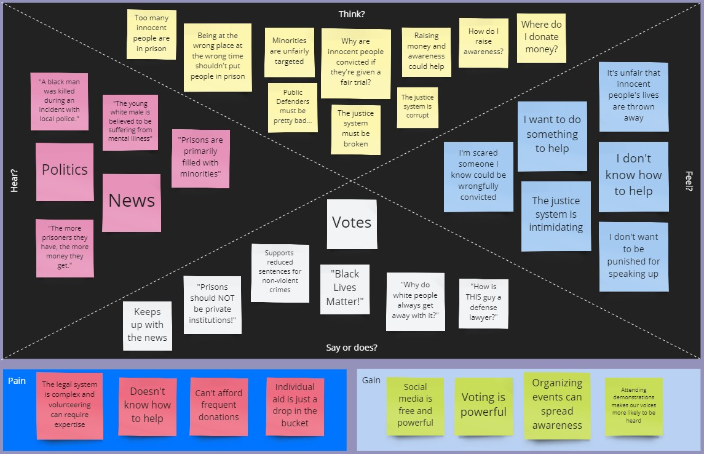
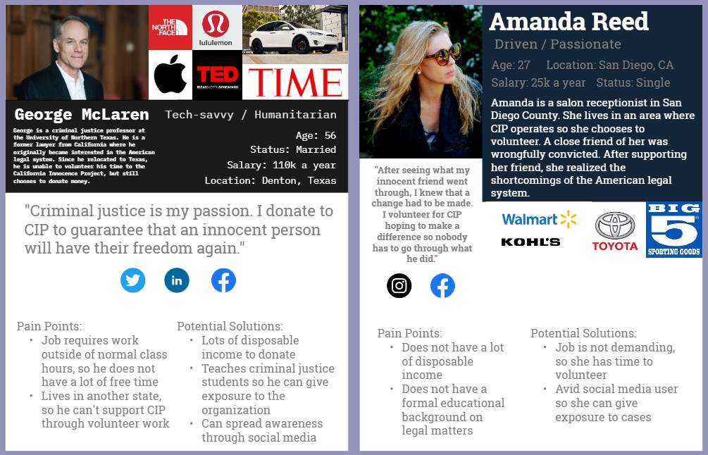
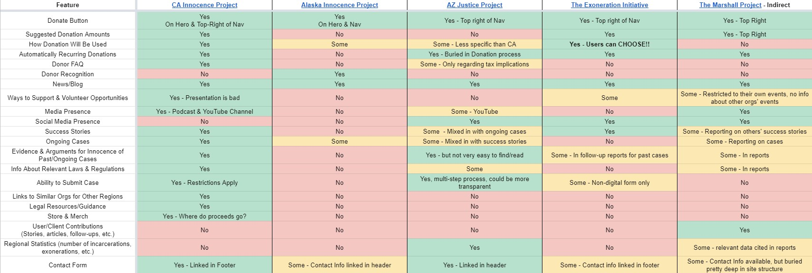
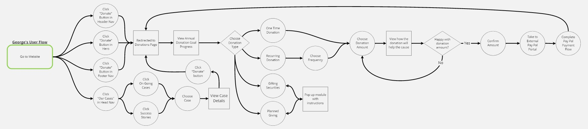
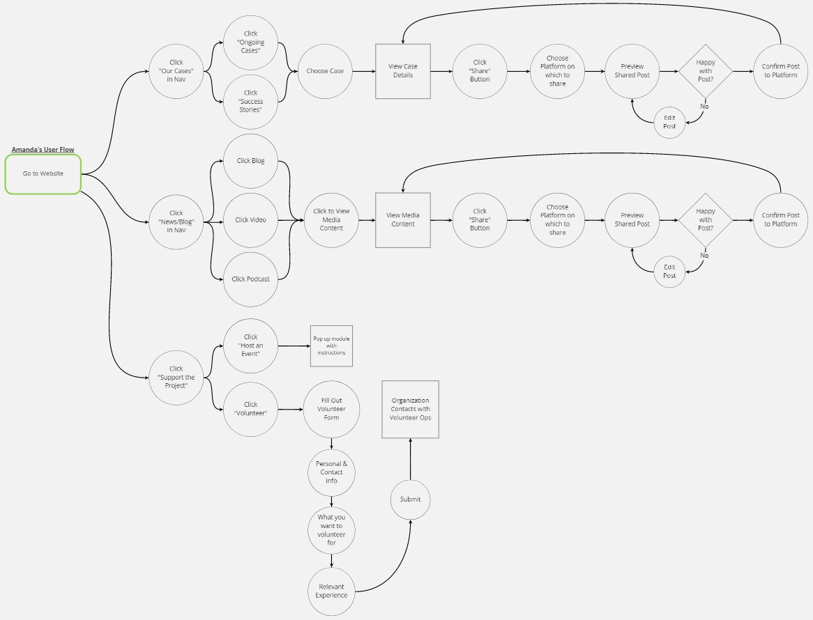
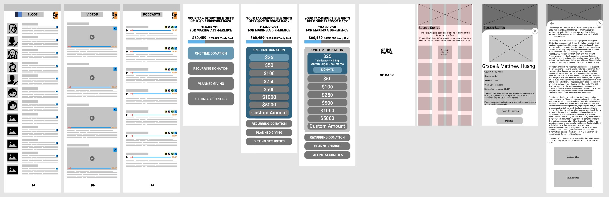
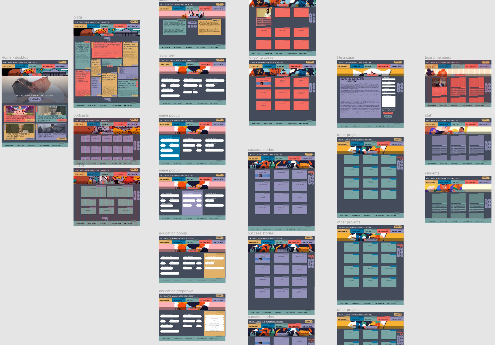

Case Study: California Innocence Project
February 2021
Team:
Henry Bradley
Leonardo Canchola
Danielle Heflin
Nick So
Tools:
Miro
Figma
Trello
Google Drive
Zoom
My Role:
- Project Management:
Task Assignment & Tracking - UX Research:
Empathy Map
Competitor Analysis
Definitions - UX Design:
User Flows
Sitemap
Prototyping Construction
Overview
The Problem:
The California Innocence Project does not generate the amount of awareness or funds that it could for the following reasons:
- The website's layout and aesthetics are bloated and dated
- The organization does not capitalize on social media to increase awareness of their cause
- Donation and volunteer opportunities are limited and convoluted
The Goal
- Create a contemporary aesthetic that speaks to young acitivists and communities that are affected by unlawful incarceration
- Increase general knowledge of unlawful incarceration and the effects it has on individuals and communities
- Generate more monetary donations and volunteers for CIP
User Research
The Research Plan:
Interviews
- Individuals affected by unjust incarceration
- Peers and others, to gauge general knowledge of CIP and their cause
- We attempted to interview a stakeholder from the organization, but did not hear back in time
Survey for Quantitative Data
The Insights:
- Respondents believe that some wrongful convictions are an unavoidable side effect of a working justice system, but the current rate is too high
- More than half of respondents believe that prison sentences can be too harsh
- Those affected by alleged wrongful convictions felt the justice system was weighed against them (ie. "Guilty until proven innocent")
- 100% of respondents think that donating money, raising awareness, and seeking legal aid are the most effective ways to help those affected by wrongful convictions - however, none knew where or how to go about doing so.
Empathy Map
We compiled our research into an Empathy Map to start forming our User Personas
User Personas
We chose to use multiple User Personas to account for the different types of users
Ideation and Definition
Storyboard
First, we defined the motivation a user might have to seek out the CIP:

Here we see Amanda witnessing a crime and the wrong person being arrested. After reaching out for information she finds the CIP and uses the information to spark her activism.
Competitor Analysis
How does the CIP stack up to other organizations? Turns out, they're pretty good.
Card Sorting & Site Map
The CIP's website navigation is in dire need of a redesign.
We used card sorting to define a new sitemap.
User Flows
Lastly, we defined the user flows for our Personas
George, our well-informed donor, has multiple paths to donating and can easily set up recurring donations.

Amanda, our passionate activist with little money to spare, can easily share content on her social media profiles and find opportunities to volunteer.
Prototyping and Iteration
Wireframing
Based on the new sitemap and user flows, we began wireframing the new site
We started with a mobile-first approach, but pivoted to a responsive design for the main prototypes because we found that users were more likely to view the site on a desktop.
Hi-Fidelity Prototype
After a few rounds of user tests, we created the final prototype with a heavy focus on social media sharing. We chose a colorful palette in order to appeal to young activists and to make the organization feel less "corporate".
The Final Prototype
Conclusion
Reflection
An organization like CIP can and should harness the power of social media to further its cause. Whether they speak directly to their community, or simply let others spread the word for them - the end result is an amplified voice that can ripple out beyond their current reach and the effects have the potential to shift public outlook entirely. Combine that push for increased social media presence with an updated look and a sleek experience that speaks to young activists and you have a recipe for real social change.
Direction
Next Steps:
- More user research!
- What content resonates?
- What do people want to share?
- Any more resources people want/need?
- Fully-responsive prototype